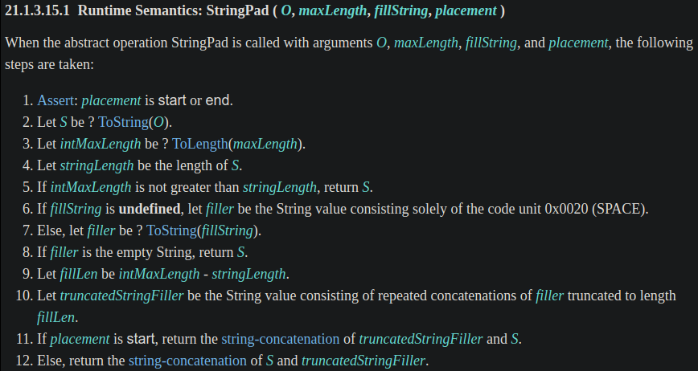

<!DOCTYPE html><html><head><meta charset="utf-8"><title>JavaScript 之旅 (5)：String method - padStart &amp; padEnd | Titangene Blog</title><meta http-equiv="X-UA-Compatible" content="IE=edge"><meta name="viewport" content="width=device-width,initial-scale=1,maximum-scale=1"><meta name="HandheldFriendly" content="True"><meta name="apple-mobile-web-app-capable" content="yes"><meta name="author" content="Titangene"><link rel="shortcut icon" href="/favicon.ico"><link rel="alternate" href="/atom.xml" title="Titangene Blog"><meta name="description" content="在字串的前綴或後綴補字元，是字串處理常見的需求，過去要自行處理，終於在 ES2017 (ES8) 新增了 String.prototype.padStart() 和 String.prototype.padEnd()，解決常見的需求！本篇來介紹它們，以及在 ECMAScript spec 是如何定義的，並附上 polyfill。"><meta property="og:type" content="article"><meta property="og:title" content="JavaScript 之旅 (5)：String method - padStart &amp; padEnd"><meta property="og:url" content="https://titangene.github.io/article/javascript-string-padstart-padend.html"><meta property="og:site_name" content="Titangene Blog"><meta property="og:description" content="在字串的前綴或後綴補字元，是字串處理常見的需求，過去要自行處理，終於在 ES2017 (ES8) 新增了 String.prototype.padStart() 和 String.prototype.padEnd()，解決常見的需求！本篇來介紹它們，以及在 ECMAScript spec 是如何定義的，並附上 polyfill。"><meta property="og:locale" content="zh_TW"><meta property="og:image" content="https://titangene.github.io/images/cover/javascript.jpg"><meta property="article:published_time" content="2020-09-20T06:55:20.000Z"><meta property="article:modified_time" content="2020-09-20T12:05:58.534Z"><meta property="article:author" content="Titangene"><meta property="article:tag" content="IT 鐵人賽"><meta property="article:tag" content="ECMAScript"><meta name="twitter:card" content="summary_large_image"><meta name="twitter:image" content="https://titangene.github.io/images/cover/javascript.jpg"><meta name="twitter:creator" content="@titangeneTW"><meta name="twitter:site" content="@titangene_blog"><meta property="fb:admins" content="100001106016019"><meta property="fb:app_id" content="2470546159839111"><meta property="og:image:width" content="1200"><meta property="og:image:height" content="630"><meta name="google-site-verification" content="AaJ39L7h-nWwJjXJMhAMtXSF6H6BUgGWXC80kYvLic8"><link href="https://fonts.googleapis.com/css2?family=Roboto&display=swap" rel="stylesheet"><link href="https://fonts.googleapis.com/css?family=Source+Code+Pro&display=swap" rel="stylesheet"><link rel="stylesheet" href="https://cdnjs.cloudflare.com/ajax/libs/font-awesome/5.13.0/css/all.min.css"><link rel="stylesheet" href="https://unpkg.com/gitalk/dist/gitalk.css"><link rel="stylesheet" href="/style.css"><script async src="https://www.googletagmanager.com/gtag/js?id=G-KX04S5LSX1"></script><script>!function(a){function n(){dataLayer.push(arguments)}a.dataLayer=a.dataLayer||[],n("js",new Date),n("config","G-KX04S5LSX1")}(window)</script><script>function setLoadingBarProgress(e){document.getElementById("loading-bar").style.width=e+"%"}</script><meta name="generator" content="Hexo 4.2.0"><link rel="alternate" href="/atom.xml" title="Titangene Blog" type="application/atom+xml"></head></html><body><div id="loading-bar-wrapper"><div id="loading-bar"></div></div><script>setLoadingBarProgress(20)</script><header class="l_header"><div class="wrapper"><div class="nav-main container container--flex"><a class="logo flat-box" href="/">Titangene Blog</a><div class="menu"><ul class="h-list"><li><a class="flat-box nav-home" href="/">Home</a></li><li><a class="flat-box nav-archives" href="/archives">Archives</a></li></ul><div class="underline"></div></div><div class="m_search"><form name="searchform" class="form u-search-form"><input type="text" class="input u-search-input" placeholder="Search"> <i class="fas fa-search"></i></form></div><ul class="switcher h-list"><li class="s-search"><a class="fas fa-search" href="javascript:void(0)"></a></li><li class="s-menu"><a class="fas fa-bars" href="javascript:void(0)"></a></li></ul></div><div class="nav-sub container container--flex"><a class="logo flat-box" href="/">Titangene Blog</a><ul class="switcher h-list"><li class="s-comment"><a class="far fa-comment-alt" href="javascript:void(0)"></a></li><li class="s-top"><a class="fas fa-arrow-up" href="javascript:void(0)"></a></li><li class="s-toc"><a class="fas fa-list-ol" href="javascript:void(0)"></a></li></ul></div></div></header><aside class="menu-phone"><nav><a href="/" class="nav-home nav">Home </a><a href="/archives" class="nav-archives nav">Archives</a></nav></aside><script>setLoadingBarProgress(40)</script><div class="l_body"><div class="container clearfix"><div class="l_main"><article id="post-javascript-string-padstart-padend" class="post white-box article-type-post" itemscope itemprop="blogPost"><section class="meta"><h2 class="title"><a href="/article/javascript-string-padstart-padend.html">JavaScript 之旅 (5)：String method - padStart &amp; padEnd</a></h2><span class="post-time"><span class="post-meta-item-icon"><i class="fa fa-calendar"></i> </span><span class="post-meta-item-text">發表於</span> <time title="建立時間：2020-09-20 14:55:20" itemprop="dateCreated datePublished" datetime="2020-09-20T14:55:20+08:00">2020-09-20 </time><span class="post-meta-divider">|</span> <span class="post-meta-item-icon"><i class="fa fa-calendar-check"></i> </span><span class="post-meta-item-text">更新於</span> <time title="修改時間：2020-09-20 20:05:58" itemprop="dateModified" datetime="2020-09-20T20:05:58+08:00">2020-09-20</time></span> <span class="comments-count"><span class="post-meta-divider">|</span> <span class="post-meta-item-icon"><i class="fas fa-comment"></i> </span><a href="https://titangene.github.io/article/javascript-string-padstart-padend.html#comments" class="article-comment-count">留言</a></span><div class="post-category"><span class="post-meta-item-icon"><i class="fa fa-folder"></i> </span><span class="post-meta-item-text">分類於</span> <span itemprop="about" itemscope itemtype="http://schema.org/Thing"><a href="/categories/javascript/" itemprop="url" rel="index"><span itemprop="name">JavaScript</span></a></span></div></section><section class="toc-wrapper"><h3>目錄</h3><ol class="toc"><li class="toc-item toc-level-1"><a class="toc-link" href="#前言"><span class="toc-text">前言</span></a></li><li class="toc-item toc-level-1"><a class="toc-link" href="#過去的補字元"><span class="toc-text">過去的補字元</span></a></li><li class="toc-item toc-level-1"><a class="toc-link" href="#現代的-padStart-和-padEnd"><span class="toc-text">現代的 padStart 和 padEnd</span></a></li><li class="toc-item toc-level-1"><a class="toc-link" href="#Sepc-定義"><span class="toc-text">Sepc 定義</span></a></li><li class="toc-item toc-level-1"><a class="toc-link" href="#polyfill"><span class="toc-text">polyfill</span></a></li><li class="toc-item toc-level-1"><a class="toc-link" href="#資料來源"><span class="toc-text">資料來源</span></a></li></ol></section><section class="article typo"><div class="article-entry" itemprop="articleBody"><p></p><p>在字串的前綴或後綴補字元，是字串處理常見的需求，過去要自行處理，終於在 ES2017 (ES8) 新增了 <code>String.prototype.padStart()</code> 和 <code>String.prototype.padEnd()</code>，解決常見的需求！本篇來介紹它們，以及在 ECMAScript spec 是如何定義的，並附上 polyfill。</p><a id="more"></a><blockquote><p>本文同步發表於 iT 邦幫忙：<a href="https://ithelp.ithome.com.tw/articles/10240599" target="_blank" rel="noopener">JavaScript 之旅 (5)：String method - padStart &amp; padEnd</a></p><p>「JavaScript 之旅」系列文章發文於：</p><ul><li><a href="https://ithelp.ithome.com.tw/users/20117586/ironman/3607" target="_blank" rel="noopener">iT 邦幫忙</a></li><li><a href="https://titangene.github.io/tags/it-%E9%90%B5%E4%BA%BA%E8%B3%BD/">Titangene Blog</a></li></ul></blockquote><h1 id="前言"><a class="header-anchor" href="#前言"></a>前言</h1><p>pad strings 是一個很常見的需求，例如：</p><ul><li>檔名編號的前綴，例如：<code>final-001.md</code>、<code>final-066.md</code></li><li>流水號的前綴，例如：<code>000021</code>、<code>000456</code></li><li>日期、時間，例如：<code>2020-09-20</code>、<code>09:05</code></li><li>讓 console 的輸出可以對齊：<code>Error 001: xxx</code></li><li>固定位數的二進位數字或十六進位數字，例如：<code>0010</code>、<code>0x00FF</code></li></ul><p>那過去和現代是如何處理這個需求？讓我們繼續看下去…</p><h1 id="過去的補字元"><a class="header-anchor" href="#過去的補字元"></a>過去的補字元</h1><p>也許你會自己寫個 <code>padStart()</code> 來處理補字元這種字串處理：</p><figure class="highlight javascript"><table><tr><td class="gutter"><pre><span class="line">1</span><br><span class="line">2</span><br><span class="line">3</span><br><span class="line">4</span><br><span class="line">5</span><br><span class="line">6</span><br></pre></td><td class="code"><pre><code class="hljs javascript"><span class="hljs-function"><span class="hljs-keyword">function</span> <span class="hljs-title">padStart</span>(<span class="hljs-params">string, targetLength, padString = <span class="hljs-string">' '</span></span>) </span>&#123;<br>  <span class="hljs-keyword">return</span> (<span class="hljs-built_in">Array</span>(targetLength).join(padString) + string)<br>    .slice(-targetLength)<br>&#125;<br><br><span class="hljs-built_in">console</span>.log(padStart(<span class="hljs-string">'18'</span>, <span class="hljs-number">4</span>, <span class="hljs-string">'0'</span>));  <span class="hljs-comment">// 0018</span><br></code></pre></td></tr></table></figure><p>或</p><figure class="highlight javascript"><table><tr><td class="gutter"><pre><span class="line">1</span><br><span class="line">2</span><br><span class="line">3</span><br><span class="line">4</span><br><span class="line">5</span><br></pre></td><td class="code"><pre><code class="hljs javascript"><span class="hljs-function"><span class="hljs-keyword">function</span> <span class="hljs-title">padStart</span>(<span class="hljs-params">string, targetLength, padString</span>) </span>&#123;<br>  <span class="hljs-keyword">return</span> padString.repeat(<span class="hljs-built_in">Math</span>.max(<span class="hljs-number">0</span>, targetLength - string.length)) + string;<br>&#125;<br><br><span class="hljs-built_in">console</span>.log(padStart(<span class="hljs-string">'18'</span>, <span class="hljs-number">4</span>, <span class="hljs-string">'0'</span>));  <span class="hljs-comment">// 0018</span><br></code></pre></td></tr></table></figure><p>或者從 Stack Overflow 找到不錯的解法參考一下<s>直接複製貼上</s>？上面的範例都是我從 <a href="https://stackoverflow.com/questions/2686855/is-there-a-javascript-function-that-can-pad-a-string-to-get-to-a-determined-leng" target="_blank" rel="noopener">Stack Overflow</a> 參考的 XD。</p><blockquote><p>補充一個與 <code>padStart()</code> 有關的 npm 套件：<a href="https://www.npmjs.com/package/left-pad" target="_blank" rel="noopener"><code>left-pad</code></a>，當年發生了一些故事，詳情可參閱：</p><ul><li><a href="https://www.thenewslens.com/article/39189" target="_blank" rel="noopener">他一怒之下刪除 11 行程式碼 網際網路遭殃 - The News Lens 關鍵評論網</a></li><li><a href="https://blog.npmjs.org/post/141577284765/kik-left-pad-and-npm" target="_blank" rel="noopener">The npm Blog — kik, left-pad, and npm</a></li></ul></blockquote><h1 id="現代的-padStart-和-padEnd"><a class="header-anchor" href="#現代的-padStart-和-padEnd"></a>現代的 <code>padStart</code> 和 <code>padEnd</code></h1><p>在 ES2017 (ES8) 新增了 <code>String.prototype.padStart()</code> 和 <code>String.prototype.padEnd()</code>，終於不用自己處理常見的字串處理需求了！</p><p>語法：</p><ul><li>第一個參數都是 <code>maxLength</code></li><li>第二個參數都是 <code>fillString</code></li></ul><figure class="highlight javascript"><table><tr><td class="gutter"><pre><span class="line">1</span><br><span class="line">2</span><br></pre></td><td class="code"><pre><code class="hljs javascript">string.padStart(maxLength [, fillString])<br>string.padEnd(maxLength [, fillString])<br></code></pre></td></tr></table></figure><p>這些 String 方法都會重複 <code>fillString</code> 這個字串多次，直到字串的長度到 <code>maxLength</code> 為止。</p><p><code>String.prototype.padStart()</code> 是將重複的 <code>fillString</code> 字串加在原字串的前面，而 <code>String.prototype.padEnd()</code> 是加在原字串的後面。看一些簡單的範例：</p><figure class="highlight javascript"><table><tr><td class="gutter"><pre><span class="line">1</span><br><span class="line">2</span><br><span class="line">3</span><br><span class="line">4</span><br><span class="line">5</span><br></pre></td><td class="code"><pre><code class="hljs javascript"><span class="hljs-built_in">console</span>.log(<span class="hljs-string">'18'</span>.padStart(<span class="hljs-number">4</span>, <span class="hljs-string">'0'</span>));  <span class="hljs-comment">// "0018"</span><br><span class="hljs-built_in">console</span>.log(<span class="hljs-string">'18'</span>.padEnd(<span class="hljs-number">4</span>, <span class="hljs-string">'0'</span>));    <span class="hljs-comment">// "1800"</span><br><br><span class="hljs-built_in">console</span>.log(<span class="hljs-string">'x'</span>.padStart(<span class="hljs-number">4</span>, <span class="hljs-string">'ab'</span>));  <span class="hljs-comment">// "abax"</span><br><span class="hljs-built_in">console</span>.log(<span class="hljs-string">'x'</span>.padEnd(<span class="hljs-number">4</span>, <span class="hljs-string">'ab'</span>));    <span class="hljs-comment">// "xaba"</span><br></code></pre></td></tr></table></figure><p>若不使用第二個參數 (即 <code>fillString</code> )，預設會是 <code>&quot; &quot;</code> (U+0020)，也就是 space：</p><figure class="highlight javascript"><table><tr><td class="gutter"><pre><span class="line">1</span><br><span class="line">2</span><br></pre></td><td class="code"><pre><code class="hljs javascript"><span class="hljs-built_in">console</span>.log(<span class="hljs-string">'18'</span>.padStart(<span class="hljs-number">4</span>));  <span class="hljs-comment">// "  18"</span><br><span class="hljs-built_in">console</span>.log(<span class="hljs-string">'18'</span>.padEnd(<span class="hljs-number">4</span>));    <span class="hljs-comment">// "18  "</span><br></code></pre></td></tr></table></figure><p>若第二個參數為 <code>''</code> (空字串)，會回傳原字串：</p><figure class="highlight javascript"><table><tr><td class="gutter"><pre><span class="line">1</span><br><span class="line">2</span><br></pre></td><td class="code"><pre><code class="hljs javascript"><span class="hljs-built_in">console</span>.log(<span class="hljs-string">'18'</span>.padStart(<span class="hljs-number">4</span>, <span class="hljs-string">''</span>));  <span class="hljs-comment">// "18"</span><br><span class="hljs-built_in">console</span>.log(<span class="hljs-string">'18'</span>.padEnd(<span class="hljs-number">4</span>, <span class="hljs-string">''</span>));    <span class="hljs-comment">// "18"</span><br></code></pre></td></tr></table></figure><p>若原字串的 length &gt;= 第一個參數的值 (即 <code>maxLength</code> )，則會回傳原字串：</p><figure class="highlight javascript"><table><tr><td class="gutter"><pre><span class="line">1</span><br><span class="line">2</span><br><span class="line">3</span><br><span class="line">4</span><br><span class="line">5</span><br></pre></td><td class="code"><pre><code class="hljs javascript"><span class="hljs-built_in">console</span>.log(<span class="hljs-string">'1234'</span>.padStart(<span class="hljs-number">2</span>, <span class="hljs-string">'0'</span>));  <span class="hljs-comment">// "1234"</span><br><span class="hljs-built_in">console</span>.log(<span class="hljs-string">'1234'</span>.padEnd(<span class="hljs-number">2</span>, <span class="hljs-string">'0'</span>));    <span class="hljs-comment">// "1234"</span><br><br><span class="hljs-built_in">console</span>.log(<span class="hljs-string">'1234'</span>.padStart(<span class="hljs-number">4</span>, <span class="hljs-string">'0'</span>));  <span class="hljs-comment">// "1234"</span><br><span class="hljs-built_in">console</span>.log(<span class="hljs-string">'1234'</span>.padEnd(<span class="hljs-number">4</span>, <span class="hljs-string">'0'</span>));    <span class="hljs-comment">// "1234"</span><br></code></pre></td></tr></table></figure><p>若想在 Number 型別的值前面補 0，需要先將 Number 型別強制轉型成 String 型別：</p><figure class="highlight javascript"><table><tr><td class="gutter"><pre><span class="line">1</span><br><span class="line">2</span><br><span class="line">3</span><br></pre></td><td class="code"><pre><code class="hljs javascript"><span class="hljs-keyword">let</span> n = <span class="hljs-number">18</span>;<br><br><span class="hljs-built_in">console</span>.log(<span class="hljs-built_in">String</span>(n).padStart(<span class="hljs-number">4</span>, <span class="hljs-string">'0'</span>));  <span class="hljs-comment">// "0018"</span><br></code></pre></td></tr></table></figure><p>否則會出現 <code>TypeError</code> 的錯誤 (因為 Number 沒有 <code>padStart</code> 和 <code>padEnd</code> 這些 method)：</p><figure class="highlight javascript"><table><tr><td class="gutter"><pre><span class="line">1</span><br><span class="line">2</span><br><span class="line">3</span><br><span class="line">4</span><br></pre></td><td class="code"><pre><code class="hljs javascript"><span class="hljs-keyword">let</span> n = <span class="hljs-number">18</span>;<br><br><span class="hljs-built_in">console</span>.log(n.padStart(<span class="hljs-number">4</span>, <span class="hljs-string">'0'</span>));<br><span class="hljs-comment">// TypeError: n.padStart is not a function</span><br></code></pre></td></tr></table></figure><h1 id="Sepc-定義"><a class="header-anchor" href="#Sepc-定義"></a>Sepc 定義</h1><p>以下是 <a href="https://www.ecma-international.org/ecma-262/#sec-string.prototype.padstart" target="_blank" rel="noopener"><code>String.prototype.padStart()</code></a> 和 <a href="https://www.ecma-international.org/ecma-262/#sec-string.prototype.padend" target="_blank" rel="noopener"><code>String.prototype.padEnd()</code></a> 在 spec 中的定義：可以看到兩者的差異不大，但步驟 2 <code>StringPad()</code> 的最後一個傳入參數不一樣</p><p></p><p>傳入 <code>start</code> 和 <code>end</code> 能幹嘛？我們接續看步驟 2 <a href="https://www.ecma-international.org/ecma-262/#sec-stringpad" target="_blank" rel="noopener"><code>StringPad()</code></a> 的定義：在步驟 11 和步驟 12 就是將 <code>fillString</code> concat 在原字串的前面或後面的關鍵 (看後面的 polyfill 會更好理解)</p><p></p><h1 id="polyfill"><a class="header-anchor" href="#polyfill"></a>polyfill</h1><p>下面是從 <a href="https://github.com/tc39/proposal-string-pad-start-end/blob/master/polyfill.js" target="_blank" rel="noopener">TC39 的 <code>String.prototype.padStart()</code> 和 <code>String.prototype.padEnd()</code> 提案提供的 polyfill</a> 稍做修改的 (看過剛剛的 spec 定義後，應該知道兩者只差一個步驟不同，原本的 polyfill 是將 spec 中的 <code>StringPad()</code> 都在兩者上分別實作，因邏輯可重用，我就將它抽成額外的 function 了)：</p><figure class="highlight javascript"><table><tr><td class="gutter"><pre><span class="line">1</span><br><span class="line">2</span><br><span class="line">3</span><br><span class="line">4</span><br><span class="line">5</span><br><span class="line">6</span><br><span class="line">7</span><br><span class="line">8</span><br><span class="line">9</span><br><span class="line">10</span><br><span class="line">11</span><br><span class="line">12</span><br><span class="line">13</span><br><span class="line">14</span><br><span class="line">15</span><br><span class="line">16</span><br><span class="line">17</span><br><span class="line">18</span><br><span class="line">19</span><br><span class="line">20</span><br><span class="line">21</span><br><span class="line">22</span><br><span class="line">23</span><br><span class="line">24</span><br><span class="line">25</span><br><span class="line">26</span><br><span class="line">27</span><br><span class="line">28</span><br><span class="line">29</span><br><span class="line">30</span><br><span class="line">31</span><br><span class="line">32</span><br><span class="line">33</span><br><span class="line">34</span><br><span class="line">35</span><br><span class="line">36</span><br><span class="line">37</span><br><span class="line">38</span><br><span class="line">39</span><br><span class="line">40</span><br><span class="line">41</span><br><span class="line">42</span><br><span class="line">43</span><br><span class="line">44</span><br><span class="line">45</span><br><span class="line">46</span><br><span class="line">47</span><br><span class="line">48</span><br><span class="line">49</span><br><span class="line">50</span><br><span class="line">51</span><br><span class="line">52</span><br><span class="line">53</span><br><span class="line">54</span><br><span class="line">55</span><br><span class="line">56</span><br><span class="line">57</span><br><span class="line">58</span><br><span class="line">59</span><br><span class="line">60</span><br></pre></td><td class="code"><pre><code class="hljs javascript"><span class="hljs-keyword">const</span> RequireObjectCoercible = <span class="hljs-function"><span class="hljs-params">O</span> =&gt;</span> &#123;<br>  <span class="hljs-keyword">if</span> (O === <span class="hljs-literal">null</span> || <span class="hljs-keyword">typeof</span> O === <span class="hljs-string">'undefined'</span>) &#123;<br>    <span class="hljs-keyword">throw</span> <span class="hljs-keyword">new</span> <span class="hljs-built_in">TypeError</span>(<span class="hljs-string">'"this" value must not be null or undefined'</span>);<br>  &#125;<br>  <span class="hljs-keyword">return</span> O;<br>&#125;;<br><span class="hljs-keyword">const</span> MAX_SAFE_INTEGER = <span class="hljs-built_in">Number</span>.MAX_SAFE_INTEGER || <span class="hljs-built_in">Math</span>.pow(<span class="hljs-number">2</span>, <span class="hljs-number">53</span>) - <span class="hljs-number">1</span>;<br><span class="hljs-keyword">const</span> ToLength = <span class="hljs-function"><span class="hljs-params">argument</span> =&gt;</span> &#123;<br>  <span class="hljs-keyword">const</span> len = <span class="hljs-built_in">Number</span>(argument);<br>  <span class="hljs-keyword">if</span> (<span class="hljs-built_in">Number</span>.isNaN(len) || len &lt;= <span class="hljs-number">0</span>) &#123;<br>    <span class="hljs-keyword">return</span> <span class="hljs-number">0</span>;<br>  &#125;<br>  <span class="hljs-keyword">if</span> (len &gt; MAX_SAFE_INTEGER) &#123;<br>    <span class="hljs-keyword">return</span> MAX_SAFE_INTEGER;<br>  &#125;<br>  <span class="hljs-keyword">return</span> len;<br>&#125;;<br><br><span class="hljs-keyword">const</span> StringPad = <span class="hljs-function">(<span class="hljs-params">O, maxLength, fillString, placement</span>) =&gt;</span> &#123;<br>  <span class="hljs-keyword">const</span> S = <span class="hljs-built_in">String</span>(O);<br>  <span class="hljs-keyword">const</span> intMaxLength = ToLength(maxLength);<br>  <span class="hljs-keyword">const</span> stringLength = ToLength(S.length);<br>  <span class="hljs-keyword">if</span> (intMaxLength &lt;= stringLength) &#123;<br>    <span class="hljs-keyword">return</span> S;<br>  &#125;<br>  <span class="hljs-keyword">let</span> filler = <span class="hljs-keyword">typeof</span> fillString === <span class="hljs-string">'undefined'</span> ? <span class="hljs-string">' '</span> : <span class="hljs-built_in">String</span>(fillString);<br>  <span class="hljs-keyword">if</span> (filler === <span class="hljs-string">''</span>) &#123;<br>    <span class="hljs-keyword">return</span> S;<br>  &#125;<br>  <span class="hljs-keyword">const</span> fillLen = intMaxLength - stringLength;<br>  <span class="hljs-keyword">while</span> (filler.length &lt; fillLen) &#123;<br>    <span class="hljs-keyword">const</span> fLen = filler.length;<br>    <span class="hljs-keyword">const</span> remainingCodeUnits = fillLen - fLen;<br>    <span class="hljs-keyword">if</span> (fLen &gt; remainingCodeUnits) &#123;<br>      filler += filler.slice(<span class="hljs-number">0</span>, remainingCodeUnits);<br>    &#125; <span class="hljs-keyword">else</span> &#123;<br>      filler += filler;<br>    &#125;<br>  &#125;<br>  <span class="hljs-keyword">const</span> truncatedStringFiller = filler.slice(<span class="hljs-number">0</span>, fillLen);<br>  <span class="hljs-keyword">if</span> (placement === <span class="hljs-string">'start'</span>) &#123;<br>    <span class="hljs-keyword">return</span> truncatedStringFiller + S;<br>  &#125; <span class="hljs-keyword">else</span> &#123;<br>    <span class="hljs-keyword">return</span> S + truncatedStringFiller;<br>  &#125;<br>&#125;<br><br><span class="hljs-keyword">if</span> (!<span class="hljs-built_in">String</span>.prototype.padStart) &#123;<br>  <span class="hljs-built_in">String</span>.prototype.padStart = <span class="hljs-function"><span class="hljs-keyword">function</span> <span class="hljs-title">padStart</span>(<span class="hljs-params">maxLength, fillString = <span class="hljs-string">' '</span></span>) </span>&#123;<br>    <span class="hljs-keyword">const</span> O = RequireObjectCoercible(<span class="hljs-keyword">this</span>);<br>    <span class="hljs-keyword">return</span> StringPad(O, maxLength, fillString, <span class="hljs-string">'start'</span>);<br>  &#125;;<br>&#125;<br><br><span class="hljs-keyword">if</span> (!<span class="hljs-built_in">String</span>.prototype.padEnd) &#123;<br>  <span class="hljs-built_in">String</span>.prototype.padEnd = <span class="hljs-function"><span class="hljs-keyword">function</span> <span class="hljs-title">padEnd</span>(<span class="hljs-params">maxLength, fillString = <span class="hljs-string">' '</span></span>) </span>&#123;<br>    <span class="hljs-keyword">const</span> O = RequireObjectCoercible(<span class="hljs-keyword">this</span>);<br>    <span class="hljs-keyword">return</span> StringPad(O, maxLength, fillString, <span class="hljs-string">'end'</span>);<br>  &#125;;<br>&#125;<br></code></pre></td></tr></table></figure><blockquote><p>其他 polyfill：</p><ul><li><code>String.prototype.padStart()</code><ul><li><a href="https://github.com/zloirock/core-js/blob/master/packages/core-js/modules/es.string.pad-start.js" target="_blank" rel="noopener">core-js</a></li><li><a href="https://github.com/es-shims/String.prototype.padStart/blob/main/implementation.js" target="_blank" rel="noopener">es-shims</a></li><li><a href="https://github.com/behnammodi/polyfill/blob/master/string.polyfill.js#L281" target="_blank" rel="noopener">behnammodi</a></li></ul></li><li><code>String.prototype.padEnd()</code><ul><li><a href="https://github.com/zloirock/core-js/blob/master/packages/core-js/modules/es.string.pad-end.js" target="_blank" rel="noopener">core-js</a></li><li><a href="https://github.com/es-shims/String.prototype.padEnd/blob/main/implementation.js" target="_blank" rel="noopener">es-shims</a></li><li><a href="https://github.com/behnammodi/polyfill/blob/master/string.polyfill.js#L258" target="_blank" rel="noopener">behnammodi</a></li></ul></li></ul></blockquote><h1 id="資料來源"><a class="header-anchor" href="#資料來源"></a>資料來源</h1><ul><li><a href="https://github.com/tc39/proposal-string-pad-start-end" target="_blank" rel="noopener">tc39/proposal-string-pad-start-end</a></li><li><a href="https://www.ecma-international.org/ecma-262/#sec-string.prototype.padstart" target="_blank" rel="noopener">21.1.3.15 String.prototype.padStart(maxLength [, fillString]) | ECMAScript 2020 Language Specification</a></li><li><a href="https://www.ecma-international.org/ecma-262/#sec-string.prototype.padend" target="_blank" rel="noopener">21.1.3.14 String.prototype.padEnd(maxLength [, fillString]) | ECMAScript 2020 Language Specification</a></li><li><a href="https://exploringjs.com/es2016-es2017/ch_string-padding.html" target="_blank" rel="noopener">8. New string methods: padStart and padEnd | Exploring ES2016 and ES2017</a></li></ul></div><div class="article-tags tags"><a href="/tags/it-%E9%90%B5%E4%BA%BA%E8%B3%BD/" title="IT 鐵人賽">IT 鐵人賽</a> <a href="/tags/ecmascript/" title="ECMAScript">ECMAScript</a></div></section><div class="article-share-links"><span>分享：</span> <a class="fab fa-facebook-f" title="Facebook" target="_blank" href="https://www.facebook.com/sharer.php?u=https%3A%2F%2Ftitangene.github.io%2Farticle%2Fjavascript-string-padstart-padend.html"></a> <a class="fab fa-twitter" title="Twitter" target="_blank" href="https://twitter.com/share?url=https%3A%2F%2Ftitangene.github.io%2Farticle%2Fjavascript-string-padstart-padend.html&amp;text=JavaScript 之旅 (5)：String method - padStart &amp; padEnd&amp;hashtags=IT鐵人賽,ECMAScript&amp;via=titangene_blog"></a> <a class="fab fa-linkedin-in" title="Linkedin" target="_blank" href="https://www.linkedin.com/sharing/share-offsite/?url=https%3A%2F%2Ftitangene.github.io%2Farticle%2Fjavascript-string-padstart-padend.html"></a> <a class="fab fa-facebook-messenger" title="Facebook Messenger" target="_blank" href="http://www.facebook.com/dialog/send?app_id=2470546159839111&amp;link=https%3A%2F%2Ftitangene.github.io%2Farticle%2Fjavascript-string-padstart-padend.html&amp;display=popup&amp;redirect_uri=https%3A%2F%2Fwww.facebook.com%2Fdialog%2Freturn%2Fclose%23_%3D_"></a> <a class="fab fa-telegram-plane" href="https://telegram.me/share/url?url=https%3A%2F%2Ftitangene.github.io%2Farticle%2Fjavascript-string-padstart-padend.html&text=JavaScript 之旅 (5)：String method - padStart &amp; padEnd" target="_blank"></a></div><nav id="article-nav"><a href="/article/javascript-object-keys-values-entries.html" id="article-nav-prev" class="article-nav-link-wrap" title="JavaScript 之旅 (4)：Object.keys() &amp; Object.values() &amp; Object.entries()" rel="prev"><strong class="article-nav-caption">Prev</strong><p class="article-nav-title">JavaScript 之旅 (4)：Object.keys() &amp; Object.values() &amp; Object.entries()</p><i class="fas fa-angle-left"></i> </a><a href="/article/javascript-promise-finally.html" id="article-nav-next" class="article-nav-link-wrap" title="JavaScript 之旅 (8)：Promise.prototype.finally()" rel="next"><strong class="article-nav-caption">Next</strong><p class="article-nav-title">JavaScript 之旅 (8)：Promise.prototype.finally()</p><i class="fas fa-angle-right"></i></a></nav><section id="list_related_posts"><h2>相關文章</h2><ul class="related-posts"><li class="related-posts-item"><a class="related-posts-link" href="/article/javascript-promise-any-aggregateerror.html">JavaScript 之旅 (27)：Promise.any() & AggregateError</a><div class="related-posts-item-abstract">本篇介紹 ES2021 (ES12) 提供的 Promise.any() 和 AggregateError。本文同步發表於 iT 邦幫忙：JavaScript 之旅 (27)：Promise.any() &amp; Ag</div></li><li class="related-posts-item"><a class="related-posts-link" href="/article/javascript-exponentiation-operator.html">JavaScript 之旅 (3)：Exponentiation Operator (指數運算子)</a><div class="related-posts-item-abstract">寫程式應該很常會用到指數運算，過去我們會用 Math.pow()，但在 ES2016 (ES7) 提供了 exponentiation operator (指數運算子) 的讓寫法更簡潔。那這兩個差在哪？讓我們從 ECMA</div></li><li class="related-posts-item"><a class="related-posts-link" href="/article/javascript-object-rest-spread-properties.html">JavaScript 之旅 (13)：Object Rest/Spread Properties</a><div class="related-posts-item-abstract">本篇介紹 ES2018 (ES9) 提供的 object rest/spread properties。本文同步發表於 iT 邦幫忙：JavaScript 之旅 (13)：Object Rest/Spread Prope</div></li><li class="related-posts-item"><a class="related-posts-link" href="/article/javascript-object-keys-values-entries.html">JavaScript 之旅 (4)：Object.keys() & Object.values() & Object.entries()</a><div class="related-posts-item-abstract">有時要將 JS 物件轉成其他資料結構，所以需要迭代物件中的所有 property，過去會用 for-in 陳述句，但只想列舉 own property，就必須用 hasOwnProperty() 才能解決。後來 ES5</div></li><li class="related-posts-item"><a class="related-posts-link" href="/article/javascript-promise-finally.html">JavaScript 之旅 (8)：Promise.prototype.finally()</a><div class="related-posts-item-abstract">本篇介紹 ES2018 (ES9) 提供的 Promise.prototype.finally()。本文同步發表於 iT 邦幫忙：JavaScript 之旅 (8)：Promise.prototype.finally()</div></li><li class="related-posts-item"><a class="related-posts-link" href="/article/javascript-ecmascript-tc39.html">JavaScript 之旅 (1)：介紹 ECMA、ECMAScript、JavaScript 和 TC39</a><div class="related-posts-item-abstract">你很常聽到 ES6、ES7、ES2017 等這些名稱嗎？有聽過 ECMA 和 TC39 嗎？ECMAScript 和 JavaScript 又是什麼？規範要去哪裡看？下面會各別介紹。本文同步發表於 iT 邦幫忙：Java</div></li></ul></section><section class="comments" id="comments"><h2>討論區</h2><div id="gitalk-container"></div></section></article><script>window.subData={title:"JavaScript 之旅 (5)：String method - padStart &amp; padEnd",tools:!0}</script></div><aside class="l_side"><section class="m_widget about"><div class="avatar-section"><style>.avatar-cover{background:url(/images/avatar_cover.jpg) 0 10%/cover no-repeat}</style><div class="avatar-cover"></div></div><div class="header">Titangene</div><div class="content"><div class="desc">利用 blog 紀錄學習歷程</div></div><div class="content"><meta itemprop="url" content="https://titangene.github.io"><div class="social-wrapper"><a itemprop="sameAs" href="https://github.com/titangene" class="social github" target="_blank" rel="external"><span class="fab fa-github-alt"></span> </a><a itemprop="sameAs" href="https://www.facebook.com/titangene.tw" class="social facebook" target="_blank" rel="external"><span class="fab fa-facebook-square"></span> </a><a itemprop="sameAs" href="https://www.instagram.com/titangene/" class="social instagram" target="_blank" rel="external"><span class="fab fa-instagram"></span> </a><a itemprop="sameAs" href="https://www.flickr.com/photos/titangene" class="social flickr" target="_blank" rel="external"><span class="fab fa-flickr"></span> </a><a itemprop="sameAs" href="/atom.xml" class="social rss" target="_blank" rel="external"><span class="fas fa-rss"></span></a></div></div></section><section class="m_widget facebook_page"><div class="fb-page" data-href="https://www.facebook.com/titangene.blog/" data-width="250" data-small-header="false" data-adapt-container-width="false" data-hide-cover="false" data-show-facepile="true"><blockquote cite="https://www.facebook.com/titangene.blog/" class="fb-xfbml-parse-ignore"><p><a href="https://www.facebook.com/titangene.blog/" class="social facebook" target="_blank"><span class="fab fa-facebook-square"></span></a></p><p><a href="https://www.facebook.com/titangene.blog/" target="_blank" rel="noopener">Titangene Blog</a></p><p>Loading...</p></blockquote></div></section><section class="m_widget recent"><div class="header">Recents</div><div class="content"><ul class="entry"><li><a itemprop="url" class="flat-box" href="/article/javascript-promise-any-aggregateerror.html"><time>2020-10-12</time><div class="name">JavaScript 之旅 (27)：Promise.any() &amp; AggregateError</div></a></li><li><a itemprop="url" class="flat-box" href="/article/javascript-bigint.html"><time>2020-10-07</time><div class="name">JavaScript 之旅 (22)：BigInt</div></a></li><li><a itemprop="url" class="flat-box" href="/article/javascript-object-rest-spread-properties.html"><time>2020-09-28</time><div class="name">JavaScript 之旅 (13)：Object Rest/Spread Properties</div></a></li><li><a itemprop="url" class="flat-box" href="/article/javascript-promise-finally.html"><time>2020-09-23</time><div class="name">JavaScript 之旅 (8)：Promise.prototype.finally()</div></a></li><li><a itemprop="url" class="flat-box" href="/article/javascript-string-padstart-padend.html"><time>2020-09-20</time><div class="name">JavaScript 之旅 (5)：String method - padStart &amp; padEnd</div></a></li><li><a itemprop="url" class="flat-box" href="/article/javascript-object-keys-values-entries.html"><time>2020-09-19</time><div class="name">JavaScript 之旅 (4)：Object.keys() &amp; Object.values() &amp; Object.entries()</div></a></li><li><a itemprop="url" class="flat-box" href="/article/javascript-exponentiation-operator.html"><time>2020-09-18</time><div class="name">JavaScript 之旅 (3)：Exponentiation Operator (指數運算子)</div></a></li></ul></div></section></aside><script>setLoadingBarProgress(60)</script></div></div><footer id="footer" class="clearfix"><div class="social-wrapper"><a href="https://github.com/titangene" class="social github" target="_blank" rel="external"><span class="fab fa-github-alt"></span> </a><a href="https://www.facebook.com/titangene.tw" class="social facebook" target="_blank" rel="external"><span class="fab fa-facebook-square"></span> </a><a href="https://www.instagram.com/titangene/" class="social instagram" target="_blank" rel="external"><span class="fab fa-instagram"></span> </a><a href="https://www.flickr.com/photos/titangene" class="social flickr" target="_blank" rel="external"><span class="fab fa-flickr"></span> </a><a href="/atom.xml" class="social rss" target="_blank" rel="external"><span class="fas fa-rss"></span></a></div><div>© 2018 - 2022 <span itemprop="copyrightHolder">Titangene</span></div><div>Powered by <a href="https://hexo.io/" target="_blank" class="codename" rel="external noopener">Hexo</a> - Theme <a href="https://github.com/stkevintan/hexo-theme-material-flow" target="_blank" class="codename" rel="external noopener">MaterialFlow</a></div><div><a rel="license noopener" href="http://creativecommons.org/licenses/by-nc-sa/4.0/" target="_blank" rel="external noopener"></a></div></footer><script>setLoadingBarProgress(80)</script><script src="//cdnjs.cloudflare.com/ajax/libs/jquery/2.1.4/jquery.min.js"></script><script src="https://cdnjs.cloudflare.com/ajax/libs/clipboard.js/2.0.0/clipboard.min.js"></script><script src="https://unpkg.com/gitalk/dist/gitalk.min.js"></script><script src="/js/jquery.fitvids.js"></script><script>var SEARCH_SERVICE="hexo",ROOT="/";ROOT.endsWith("/")||(ROOT+="/")</script><script src="/js/search.js"></script><script src="/js/app.js"></script><script src="/js/clipboard-use.js"></script><script type="text/javascript">var gitalk=new Gitalk({clientID:"dd1684f31ee17e25c22b",clientSecret:"4b51bb4a5996b04d58821a6e3da8558f23da4cdf",id:window.location.pathname,repo:"hexo-blog",owner:"titangene",admin:"titangene",distractionFreeMode:"true"});gitalk.render("gitalk-container")</script><div id="fb-root"></div><script>window.fbAsyncInit=function(){FB.init({appId:"2470546159839111",autoLogAppEvents:!0,xfbml:!0,version:"v2.11"}),FB.AppEvents.logPageView()},function(e,n,t){var o,s=e.getElementsByTagName(n)[0];e.getElementById(t)||((o=e.createElement(n)).id=t,o.src="//connect.facebook.net/zh_TW/sdk.js",s.parentNode.insertBefore(o,s))}(document,"script","facebook-jssdk")</script><script>setLoadingBarProgress(100)</script></body>